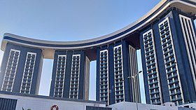
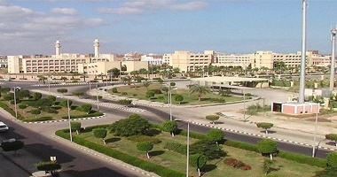
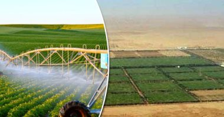
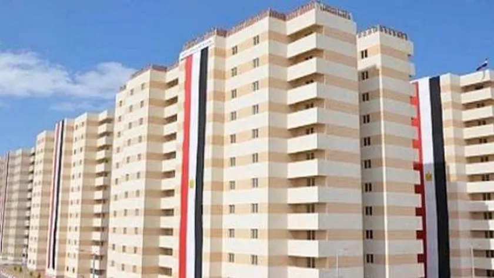
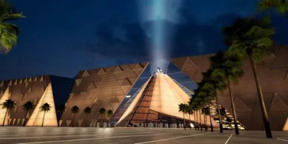
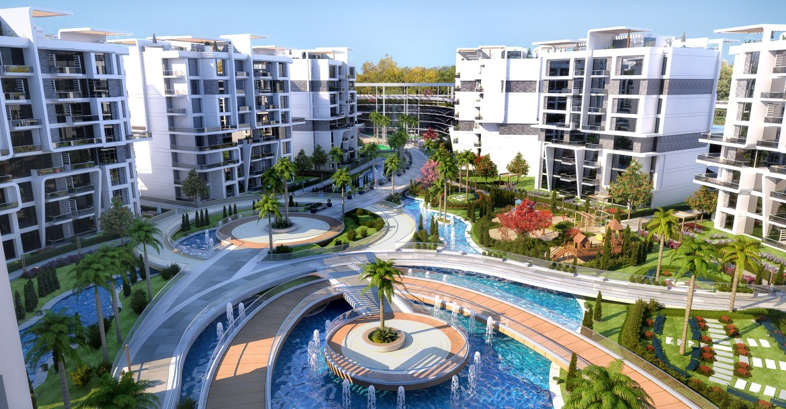

المشروعات القومية هى مشروعات كبيرة الحجم ذات تأثيرات تنموية اقتصادية واجتماعية مهمة،
واسعة النطاق على المستوى الجغرافى، تأخذ فى الإعتبار أولويات الدولة وخطط تنمية مستدامة طويلة ومتوسطة المدى.
بعض المشروعات التي اقامتها الحكومة المصرية
قناة السويس الجديدة
على مساحة 72 كم تم إنشاء قناة السويس الجديدة بهدف تقليل المدة الزمنية لعبور السفن إلى 11 ساعة بدلا من 18 ساعة لتحقيق ربحية أكثر تقدر بنسبة 50% طول المجرى الملاحي.
مدينة العلمين الجديدة

تعد الحكومة المصرية مدينة العلمين الجديدة الواقعة على مساحة 48 ألف فدان لتصبح بوابة مصر للاستثمار عبر تشييد العديد من المشروعات، واستيعاب نحو أكثر من 3 ملايين نسمة.
مجمع الصناعات الصغيرة والمتوسطة

على أطراف العاصمة المصرية بمدينة العاشر من رمضان، دشنت الحكومة مجمعا للصناعات الصغيرة والمتوسطة ليضم 384 ورشة صناعية مقسمة على 3 مجمعات صناعية على مساحة تقدر 454 ألف م2.
مشروع المليون ونصف فدان

بدأ التفكير في مشروع المليون ونصف فدان في عام 2014 وتم اطلاق خطة المشروع في عام 2016 في عهد حكم الرئيس عبد الفتاح السيسي الذي أسند إدارته إلى شركة الريف المصري ، وتشمل دراسة المشروع و تنفيذه ثلاث مراحل.
بشائر الخير

مشروع بشائر الخير هو أكبر مشروع قومى فى مجال تطوير العشوائيات، يهدف إلى تحويل المناطق العشوائية إلى مناطق حضارية تنموية، ليست مناطق سكنية فقط، بل يتضمن المشروع إنشاء مولات تجارية ومستشفيات ومساجد وكنائس ومراكز حرفية وتنموية للنهوض بتلك المناطق.
المتحف المصري الجديد

تم بناء المتحف المصري الجديد على بعد حوالي 2 كيلومتر من مجمع أهرامات الجيزة، وهو أحد مواقع التراث الثقافي العالمي التابع لليونسكو، ويُعد مشروع المتحف من ضمن المشاريع المخطط لها لتنشيط السياحة في منطقة الجيزة، وهذا يشمل فتح المتحف وتجديد هضبة الأهرامات.
العاصمة الادارية الجديدة

أعلن عن المشروع العاصمة الإدارية الجديدة عام 2015 ليضم القصر الرئاسي الجديد والبرلمان والحكومة وحي دبلوماسي راقي، ولتكون مقرا للوزارات والهيئات الرسمية والسفارات بمصر ومقرا للشركات ومؤسسات القطاع الخاص ويضم كذلك منتجعات ومراكز تسوق حديثة وأحياء سكنية راقية.